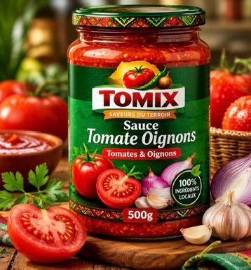
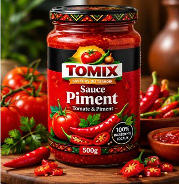
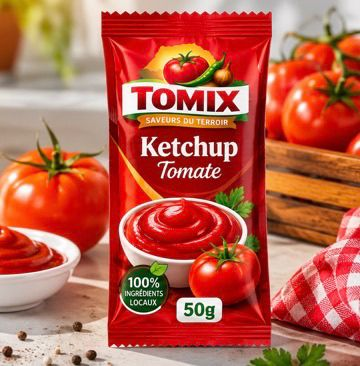
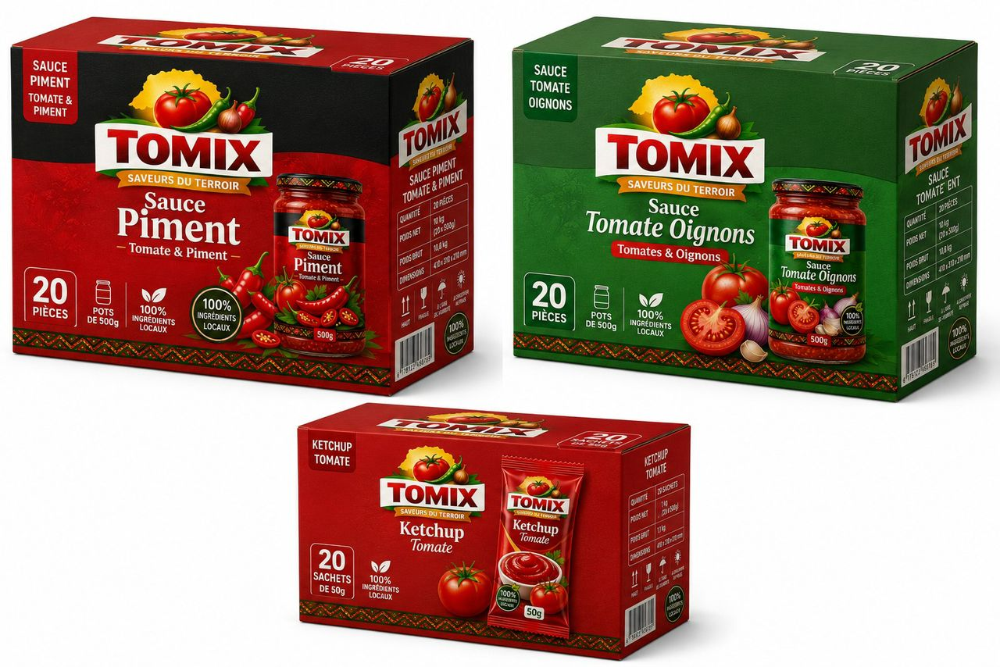

500 gTomates & Oignons
Un équilibre parfait entre tomates mûres et oignons fondants, cuisinés avec ail, sel iodé et épices naturelles. Idéale pour accompagner riz, pâtes, viandes, poissons et bien plus.

500 gTomate & Piment
Pour relever vos plats avec caractère : tomates et piments sélectionnés, cuisinés avec ail, vinaigre et épices naturelles. Parfaite pour riz, pâtes, grillades et sandwichs.

50 gSaveur douce et naturelle
En sachet individuel de 50g, notre ketchup tomate accompagne parfaitement frites, sandwichs, viandes, burgers et snacks — à la maison comme en déplacement.
Épiceries, restaurants, superettes : commandez la gamme TOMIX en carton pour approvisionner votre commerce.

Chaque référence est disponible en carton de 20 pièces, prêt à être exposé en rayon ou stocké en réserve.
| Référence | Quantité | Poids net | Prix carton |
|---|---|---|---|
| Sauce Tomate Oignons 500g | 20 pots | 10 kg | 12 000 FCFA |
| Sauce Piment 500g | 20 pots | 10 kg | 10 000 FCFA |
| Ketchup Tomate 50g | 20 sachets | 1 kg | 5 000 FCFA |
Notre équipe vous répond rapidement, par téléphone ou WhatsApp.